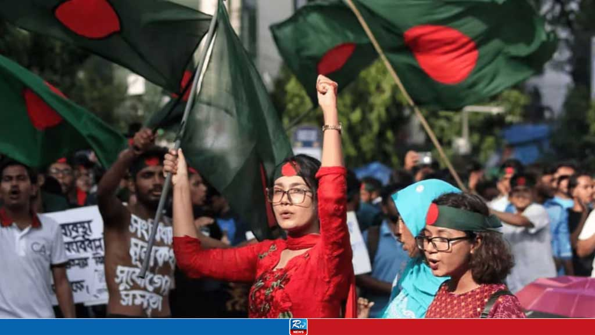

Explore the Rich History of Bangladesh
Discover Bangladesh's journey from its ancient roots to its modern achievements, highlighting key milestones and cultural triumphs.
Timeline
1947 - Partition of India
The Partition of India in 1947 was a monumental and tragic event that resulted in the creation of two independent nations: India and Pakistan. The partition was primarily based on religious differences, with India becoming a secular state with a Hindu majority, while Pakistan was created as a homeland for Muslims. East Bengal became East Pakistan, and West Punjab became West Pakistan. The main reason for the partition was the demand by the All-India Muslim League, led by Muhammad Ali Jinnah, for a separate state for Muslims. The League argued that Muslims would not be able to practice their religion freely or maintain their cultural identity in a predominantly Hindu India. The partition led to the mass migration of millions of people, with Hindus and Sikhs moving to India, and Muslims relocating to Pakistan. The migration was accompanied by horrific violence, communal riots, and widespread atrocities, causing the death of up to two million people. The partition also left the Kashmir region disputed, contributing to several wars and continuing tensions between India and Pakistan. The legacy of partition is still visible today in the political, social, and cultural divisions within the subcontinent.
"The partition resulted in the largest mass migration in human history, as millions of people crossed borders in search of safety."
"The impact of the partition is still felt today, as the countries of India and Pakistan continue to deal with the legacy of this historical event."
1971 - Liberation War
In 1971, Bangladesh achieved independence after a nine-month-long struggle known as the Liberation War. The conflict began following growing discontent over political, economic, and cultural differences between East Pakistan (now Bangladesh) and West Pakistan (now Pakistan). The situation escalated after the Awami League, led by Sheikh Mujibur Rahman, won a majority in the 1970 elections, but the Pakistani government, led by Yahya Khan, was unwilling to transfer power. On March 25, 1971, Pakistan launched a brutal military operation, Operation Searchlight, to suppress the people of East Pakistan, which led to widespread atrocities, including mass killings and the displacement of millions. The war saw the people of East Pakistan, supported by India, fighting against the Pakistani military forces. The conflict ended with the surrender of the Pakistani forces on December 16, 1971, marking the birth of the independent nation of Bangladesh. The Liberation War remains a defining moment in Bangladesh's history and its struggle for autonomy, freedom, and dignity.
"The Liberation War of 1971 was a struggle for justice, self-determination, and the right to live with dignity."
"The victory in 1971 not only marked the birth of Bangladesh as an independent nation but also signified the triumph of the spirit of the people."
1999 - UNESCO Recognition
In 1999, UNESCO officially declared February 21 as International Mother Language Day, a significant recognition of the importance of linguistic and cultural diversity worldwide. This date was chosen to honor the Language Movement martyrs of Bangladesh, who sacrificed their lives on February 21, 1952, while protesting the imposition of Urdu as the sole state language of East Pakistan (now Bangladesh). The protests turned into a tragic event where several students and activists were killed by police while demonstrating in Dhaka. The day has since become a symbol of the struggle for language rights and the preservation of cultural identity. International Mother Language Day is observed globally, raising awareness about the importance of mother languages in education, cultural expression, and communication, and promoting linguistic diversity and multilingualism.
"Language is a key to preserving cultural heritage, and International Mother Language Day serves as a reminder of the sacrifices made for language rights."
"The recognition of February 21 by UNESCO is a tribute to the martyrs who fought for the right to speak their mother tongue."
Books to Know Bangladesh's History
Bangladesh Quota Reform Movement(2024) - A Second Independence
The 2024 Bangladesh Quota Reform Movement marked a significant chapter in the nation's journey towards equitable opportunities. Sparked by growing concerns over discrimination and lack of transparency in the quota system, this movement united students and youth across the country in a call for justice. It was not just a demand for fairer recruitment policies but a battle for the rights of the people, echoing the cries of independence heard in 1971.
Frustration over the dominance of quotas in government job recruitment had been simmering for years. In 2024, rising unemployment and the perceived unfairness of the system ignited a nationwide protest. Demonstrations spread across campuses, demanding a shift to a merit-based system and transparency in administrative hiring. The movement gained momentum, with participants calling it a “second independence,” likening the fight for meritocracy to the fight for sovereignty in 1971.
Reflecting on the nation’s history, many participants of the 2024 movement drew inspiration from the courage and unity shown during the 1971 Liberation War. Although they did not witness 1971 firsthand, the spirit of sacrifice and the fight for justice resonated deeply. Protesters often quoted, "We didn’t see 1971, but we see 2024", emphasizing that their generation was ready to fight for fairness and a better future. For them, achieving equality in public sector recruitment felt like a second struggle for independence, with the oppressive quota system representing a new form of injustice.
The movement gained global attention, with foreign organizations and human rights groups expressing solidarity with the students. Several international NGOs provided logistical support, including legal aid and communication tools, to ensure the safety of the protesters. Some foreign embassies in Dhaka issued statements urging peaceful resolution and emphasizing the importance of fairness and meritocracy in governance.
Behind the scenes, prominent Bangladeshi expatriates and student organizations abroad amplified the movement’s voice on international platforms. Social media campaigns initiated by students in the diaspora brought global awareness to the protesters' plight. Financial aid and supplies were sent to support the students, including medical kits for those injured in clashes with authorities.
Following weeks of protests and external pressure, the government introduced significant reforms to reduce quota allocations and prioritize merit-based recruitment. These changes have since improved transparency and created opportunities for skilled individuals to join the public sector.
The 2024 movement demonstrated that the spirit of 1971 lives on in every generation, reminding Bangladesh of its collective strength in the face of injustice. As the nation reflects on this modern struggle, it serves as a reminder that unity, resilience, and determination are timeless values. In this sense, the movement was not just a call for reform but a renewed fight for the freedoms and fairness that the country gained in 1971, marking a new chapter in Bangladesh’s continued quest for justice and equality.
Sources: Compiled from news reports, international press coverage, and interviews with movement participants.